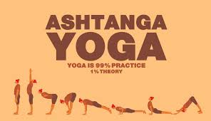

Around 2000 years ago the Indian sage Patanjali defines classical yoga, shares insights into the human mind and offers direction on how to achieve the state of yoga, in a collection of 196 aphorisms called Yoga Sutras. As well as summarising the eight limbs of Ashtanga yoga, he describes the nature of human suffering and guides us to understand the root of consciousness and gifts to be gained through the practise of Ashtanga yoga and having a balanced approach to life.
From the early 1930s to 1950s, the Maharaja of Mysore sponsored Krishnamacharya and gave him a yoga space (shala) in the Mysore Jaganmohan Palace grounds. His remit was to popularise yoga. Krishnamacharya’s teaching changed and adapted to his students, throughout his life. He was influenced by a range of hatha yoga texts, scriptures, Patanjali’s Yoga Sutras, asanas that he learned from his guru and by elements of physical culture in India, during that time. One of his first students was Sri K Pattabhi Jois (the architecht of today’s Ashtanga asana system), whom he taught for over twenty years. In 1937 the Maharaja of Mysore asked Jois to open a yoga department at the Sanskrit College in Mysore. He was made Professor of Yoga nineteen years later and taught there until 1973.
Asana (posture) is the third limb and its aim is to purify the body and prepare it for meditation. The mind has to be cleaned also, as do speech and behaviour. The other limbs invite us to do this via our: moral, ethical and social conduct (yamas); personal behaviour (niyamas); breath control (pranayama); sensory control (pratyahara); concentration (dharana) and meditation (dhyana). With mastery of the aforementioned limbs, the superconscious state of final limb (samadhi) may be experienced.
Today, there are six ‘series’ of Ashtanga yoga asanas: Primary (Yoga Chikitsa) to align, detoxify, balance, open and strengthen the body; Intermediate (Nadi Sodhana) to purify the nervous system; Advanced A, B, C and D (Sthira Bhaga Samapta) to demonstrate high levels of strength, flexibility, grace and humility. When one asana is mastered in a controlled manner within the context of its vinyasa (with tristhana, good alignment and calm deep breathing), the next is added until a complete series is practised regularly. When one series is mastered, the asanas of the next series are learned one by one, in the same way. When more than half of the asanas of the next series have been mastered, the different series are ‘split’ and practised on different days. With time (as the body and mind purify, grow stronger and become more open), the other aspects of Ashtanga yoga transpire organically, allowing us to find our true nature and connection with the universe.

K. Pattabhi Jois (26 July 1915 – 18 May 2009) was an Indian yoga guru who developed and popularized the flowing style of yoga as exercise known as Ashtanga vinyasa yoga. In 1948, Jois established the Ashtanga Yoga Research Institute in Mysore, India. Pattabhi Jois is one of a short list of Indians instrumental in establishing modern yoga as exercise in the 20th century, along with B. K. S. Iyengar, another pupil of Krishnamacharya in Mysore.
Listen a Mantra and be happy